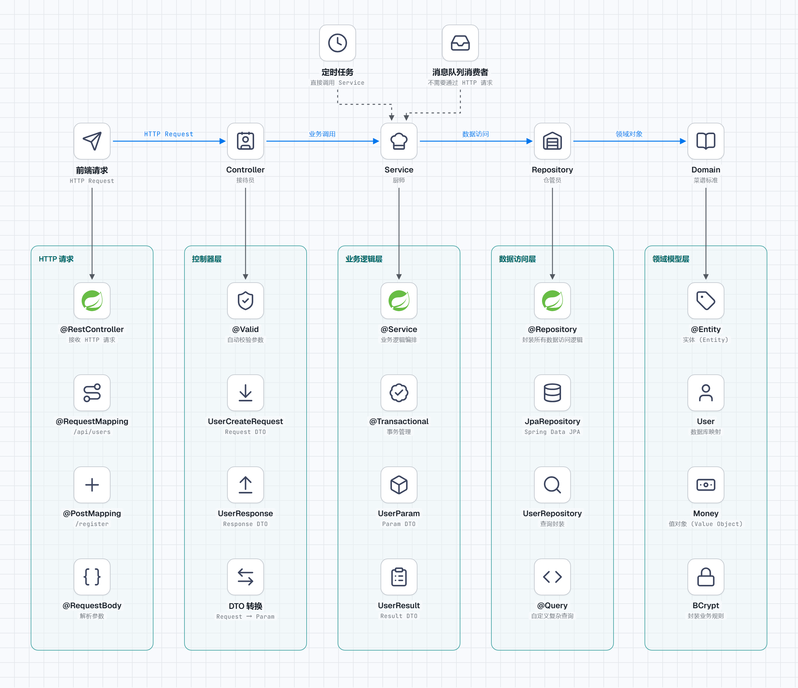

后端分层架构
本章目录 · 1 节
后端分层架构原理
核心问题: 代码越写越乱,怎么组织才能清晰易懂?
当项目从几十行代码扩展到数万行,从单人开发到多人协作,从简单CRUD到复杂业务逻辑时,代码组织方式直接决定了项目的生死。分层架构不是为了炫技或遵循教条,而是为了解决软件工程中的一个根本性矛盾:业务复杂度的自然增长与人类认知能力的有限性之间的冲突。
1. 需要分层的必要性
1.1 问题的根源
初期版本(100行代码):
@PostMapping("/register")
public Result register(@RequestBody User user) {
// 1. 检查用户名是否重复
if (userRepository.findByUsername(user.getUsername()) != null) {
return Result.error("用户名已存在");
}
// 2. 加密密码
user.setPassword(encrypt(user.getPassword()));
// 3. 保存用户
userRepository.save(user);
// 4. 发送欢迎邮件
emailService.sendWelcome(user.getEmail());
// 5. 记录日志
log.info("User registered: {}", user.getUsername());
return Result.success();
}
6个月后(500行代码):
- 新增了手机号验证
- 新增了实名认证
- 新增了邀请奖励
- 新增了风控检查
- ...
现在这个方法有500行,每次修改都提心吊胆,因为:
- 逻辑混在一起,改一处可能影响其他功能
- 难以测试,每次测试都要模拟完整的HTTP请求
- 新人看不懂,因为所有逻辑都堆在一起
问题的本质:代码没有"边界",所有职责都混在一起。
技术债的累积效应:
- ❌ 高耦合:业务逻辑与数据访问、HTTP协议耦合,修改牵一发而动全身
- ❌ 低内聚:一个方法承担了多个职责,违反单一职责原则
- ❌ 难测试:无法独立测试业务逻辑,必须启动完整HTTP容器
- ❌ 难复用:业务逻辑绑定在HTTP请求中,定时任务、消息队列无法复用
- ❌ 认知负荷:开发者需要同时理解所有层次的细节,无法聚焦
1.2 分层的核心思想
┌─────────────────────────────────────┐
│ 接收请求 ← Controller │ 只负责"接单"
├─────────────────────────────────────┤
│ 业务编排 ← Service │ 只负责"做菜"
├─────────────────────────────────────┤
│ 数据存取 ← Repository │ 只负责"取食材"
├─────────────────────────────────────┤
│ 业务定义 ← Domain │ 只负责"菜谱标准"
└─────────────────────────────────────┘
关键原则:
- 每一层只做自己的事
- 层与层之间通过明确的接口通信
- 业务逻辑集中在 Service 和 Domain
- 数据访问逻辑集中在 Repository
分层架构的工程价值:
- 降低认知负荷:开发者可以专注于当前层的职责,无需理解全局细节
- 提高可测试性:每层可以独立单元测试,Mock依赖即可
- 增强可维护性:需求变更时,定位修改范围明确,降低风险
- 促进代码复用:业务逻辑不依赖HTTP,可在定时任务、消息队列中复用
- 支持团队协作:不同开发者可以并行开发不同层,减少冲突
- 延长代码寿命:清晰的边界让代码更容易重构和演进
2. 四层架构详解
2.1 整体结构
分层架构的本质是关注点分离(Separation of Concerns)和依赖方向控制:
┌─────────────────────────────────────────────────────┐
│ 前端请求 │
└────────────────────┬────────────────────────────────┘
│ HTTP Request
▼
┌─────────────────────────────────────────────────────┐
│ Controller (控制器层) │
│ - 接收请求、参数校验 │
│ - DTO 转换 │
│ - 调用 Service │
│ - 返回响应 │
└────────────────────┬────────────────────────────────┘
│ 业务调用
▼
┌─────────────────────────────────────────────────────┐
│ Service (业务逻辑层) │
│ - 业务逻辑编排 │
│ - 事务管理 │
│ - 协调多个 Repository │
│ - 跨模块协调 │
└────────────────────┬────────────────────────────────┘
│ 数据访问
▼
┌─────────────────────────────────────────────────────┐
│ Repository (数据访问层) │
│ - 数据库 CRUD │
│ - 查询封装 │
│ - ORM 映射 │
└────────────────────┬────────────────────────────────┘
│ 领域对象
▼
┌─────────────────────────────────────────────────────┐
│ Domain (领域模型层) │
│ - 实体 (Entity) │
│ - 值对象 (Value Object) │
│ - 业务规则 │
└─────────────────────────────────────────────────────┘
依赖方向:代码依赖必须指向更稳定、更抽象的方向
- Controller 依赖 Service 接口(抽象)
- Service 依赖 Repository 接口(抽象)
- 所有层都依赖 Domain(业务核心,最稳定)
- 不允许反向依赖(如 Repository 依赖 Service)
2.2 Controller 层
职责:请求的"接待员"
- 接收 HTTP 请求,解析参数
- 参数校验(格式、必填等)
- DTO 转换(Request → Param)
- 调用 Service 执行业务
- DTO 转换(Result → Response)
- 返回 HTTP 响应
不该做的事:
- 直接写业务逻辑
- 直接操作数据库
- 处理事务
设计哲学: Controller 是系统的"门面",承担适配器职责——将外部HTTP协议适配为内部业务调用。它不应该包含任何业务决策,因为业务决策是领域知识的体现,应该与传输协议解耦。
示例:
@RestController
@RequestMapping("/api/users")
public class UserController {
private final UserService userService;
@PostMapping
public UserResponse createUser(
@RequestBody @Valid UserRequest request) {
// 1. Request DTO → Param DTO
UserParam param = UserParam.builder()
.username(request.getUsername())
.password(encrypt(request.getPassword()))
.email(request.getEmail())
.build();
// 2. 调用 Service
User user = userService.createUser(param);
// 3. Entity → Response DTO
return UserResponse.from(user);
}
}
关键点:
- 用
@Valid自动校验参数 - 用 DTO 隔离前后端数据结构
- 只做"翻译"和"调度",不包含业务逻辑
2.3 Service 层
职责:业务的"厨师"
- 实现核心业务逻辑
- 编排多个 Repository 的操作
- 管理事务边界
- 处理跨模块协调
不该做的事:
- 直接写 SQL(交给 Repository)
- 处理 HTTP 相关的事情
- 返回数据库实体给 Controller
设计哲学: Service 层是业务逻辑的载体,应该保持纯粹性。它不依赖任何框架或传输协议,这样可以:
- 独立于Web层做单元测试
- 在定时任务、消息队列消费者中复用
- 避免技术栈变更影响业务逻辑
示例:
@Service
@RequiredArgsConstructor
public class UserService {
private final UserRepository userRepository;
private final EmailService emailService;
@Transactional
public User createUser(UserParam param) {
// 1. 业务规则:检查用户名是否重复
if (userRepository.existsByUsername(param.getUsername())) {
throw new UserAlreadyExistsException();
}
// 2. 创建用户实体
User user = new User();
user.setUsername(param.getUsername());
user.setPassword(param.getPassword());
user.setEmail(param.getEmail());
// 3. 保存到数据库
userRepository.save(user);
// 4. 发送欢迎邮件(跨模块协调)
emailService.sendWelcomeEmail(user);
return user;
}
}
关键点:
- 用Transactional保证事务一致性
- 抛出业务异常,让Controller统一处理
- 不依赖HTTP概念,可以复用
2.4 Repository 层
职责:数据的"仓管员"
- 封装所有数据访问逻辑
- 执行CRUD操作
- 处理ORM映射
- 封装查询条件
不该做的事:
- 写业务逻辑
- 处理事务(Service层管理)
- 依赖上层模块
设计哲学: Repository 是数据访问的抽象层,它隐藏了底层数据库的细节。这种抽象的价值在于:
- 切换数据库时只需修改Repository实现,业务逻辑无需变动
- 便于用Mock做单元测试
- 查询逻辑集中管理,避免重复代码
示例:
@Repository
public interface UserRepository extends JpaRepository<User, Long> {
// Spring Data JPA 自动实现
Optional<User> findByUsername(String username);
boolean existsByUsername(String username);
// 自定义复杂查询
@Query("SELECT u FROM User u WHERE u.email = :email AND u.deleted = false")
Optional<User> findActiveByEmail(@Param("email") String email);
}
关键点:
- Repository是接口,不包含业务逻辑
- 用方法名表达查询意图
- 可以用Query自定义复杂查询
2.5 Domain 层
职责:业务的"菜谱标准"
- 定义业务实体(Entity)
- 定义值对象(Value Object)
- 封装业务规则
- 作为所有层的共同依赖
重要特性:
- Domain层不依赖任何其他层
- 所有层都依赖Domain层
- 是分层架构的基础
设计哲学: Domain层是整个系统的业务核心,它表达了领域知识和业务规则。它的纯粹性很重要:
- 不依赖框架意味着业务逻辑不被技术栈绑架
- 所有层都依赖它,保证了业务规则的统一性
- 便于长期演进,技术栈可以替换,业务规则相对稳定
示例:
@Entity
public class User {
@Id
@GeneratedValue(strategy = GenerationType.IDENTITY)
private Long id;
@Column(unique = true, nullable = false)
private String username;
@Column(nullable = false)
private String password;
// ✅ 业务方法:封装业务规则
public boolean isPasswordCorrect(String rawPassword) {
return BCrypt.checkpw(rawPassword, this.password);
}
public void changePassword(String oldPassword, String newPassword) {
if (!isPasswordCorrect(oldPassword)) {
throw new IncorrectPasswordException();
}
this.password = BCrypt.hashpw(newPassword);
}
}
关键点:
- Entity 有唯一标识
- 业务规则封装在 Domain 对象中
- Domain 层是纯粹的业务逻辑,不依赖框架
3. DTO:层与层之间的"翻译官"
3.1 需要 DTO的原理
问题:如果直接把数据库实体返回给前端:
// ❌ 错误:直接返回 Entity
@Entity
public class User {
private Long id;
private String username;
private String password; // 敏感信息!
private Boolean isDeleted; // 内部字段!
}
前端会收到不该暴露的字段,存在安全风险。
解决方案:用 DTO 做"翻译"
数据库 Entity → Service Param/Result → Controller Request/Response → 前端
3.2 DTO 的类型
| 类型 | 用途 | 示例 |
|---|---|---|
| Request DTO | Controller 接收参数 | UserCreateRequest |
| Response DTO | Controller 返回数据 | UserResponse |
| Param DTO | Service 方法参数 | UserParam |
| Result DTO | Service 返回结果 | UserResult |
| Entity | 数据库映射 | User |
关键原则: 每层使用自己的 DTO,不要直接传递 Entity,DTO 只包含必要的字段,这样可以避免暴露内部实现细节,保证各层的独立性。
4. 依赖方向:分层架构的铁律
4.1 依赖倒置原则
错误的做法:
Controller → UserServiceImpl → UserDaoImpl → UserEntity
正确做法:
Controller → UserService(接口) → UserRepository(接口) → UserEntity
依赖方向:
正确的依赖方向是所有层都依赖更抽象、更稳定的层。具体来说,Controller 依赖 Service 接口,Service 依赖 Repository 接口,所有层都依赖 Domain 层,而 Domain 层不依赖任何其他层。这种依赖方向确保了业务逻辑的独立性和可测试性。
错误的做法包括 Service 直接依赖 Repository 实现类,Controller 直接操作数据库,或者 Domain 层依赖其他层,这些都会导致耦合度升高,降低系统的可维护性。
4.2 代码示例
// ✅ 正确:依赖接口
@Service
public class OrderService {
private final OrderRepository orderRepository; // 接口
private final PaymentService paymentService; // 接口
}
// ✅ 实现类通过 Spring 自动注入
@Repository
public class OrderRepositoryImpl implements OrderRepository {
// 实现细节
}
5. 实战案例:电商订单系统
5.1 需求
- 用户选择商品
- 检查库存
- 计算金额
- 创建订单
- 扣减库存
5.2 代码实现
Domain 层:
@Entity
public class Order {
@Id
private Long id;
private Long userId;
private List<OrderItem> items;
private Money totalAmount;
private OrderStatus status;
public void calculateTotal() {
Money total = Money.zero();
for (OrderItem item : items) {
total = total.add(item.getSubTotal());
}
this.totalAmount = total;
}
public void cancel() {
if (this.status != OrderStatus.PENDING_PAYMENT) {
throw new IllegalStateException("只有待支付订单可以取消");
}
this.status = OrderStatus.CANCELLED;
}
}
Repository 层:
@Repository
public interface OrderRepository extends JpaRepository<Order, Long> {
List<Order> findByUserIdOrderByCreatedAtDesc(Long userId);
}
Service 层:
@Service
@RequiredArgsConstructor
public class OrderService {
private final OrderRepository orderRepository;
private final InventoryService inventoryService;
@Transactional
public OrderDTO createOrder(OrderParam param) {
// 1. 验证商品并扣减库存
for (OrderItemParam item : param.getItems()) {
inventoryService.reserveStock(item.getProductId(), item.getQuantity());
}
// 2. 创建订单
Order order = new Order();
order.setUserId(param.getUserId());
order.calculateTotal();
// 3. 保存订单
orderRepository.save(order);
return OrderDTO.from(order);
}
}
Controller 层:
@RestController
@RequestMapping("/api/orders")
public class OrderController {
private final OrderService orderService;
@PostMapping
public OrderResponse createOrder(@RequestBody @Valid OrderRequest request) {
OrderParam param = OrderParam.builder()
.userId(request.getUserId())
.items(request.getItems())
.build();
OrderDTO order = orderService.createOrder(param);
return OrderResponse.from(order);
}
}
6. 常见问题
6.1 Controller 可以写业务逻辑吗
Controller 不应该写业务逻辑,它只负责接收请求和返回响应。业务逻辑应该封装在 Service 层,这样做的好处是代码可以被复用,例如定时任务或消息队列消费者可以直接调用 Service,而不需要通过 HTTP 请求。同时,业务逻辑集中在一个地方,更容易测试和维护,避免了逻辑分散导致的不一致问题。
6.2 贫血模型和充血模型概述
贫血模型是指实体类只包含属性和对应的 getter/setter 方法,不包含任何业务逻辑,所有的业务规则都放在 Service 层中实现。这种模型结构简单,易于理解,是大多数项目采用的方式。
充血模型是指实体类不仅包含属性,还包含与该实体相关的业务方法,将业务规则封装在实体内部。这种方式更符合面向对象的设计思想,让数据和行为在一起,提高了代码的内聚性。
建议根据团队的技术背景和项目复杂度选择合适的模型,但无论选择哪种,都应该保持一致性,并且 Domain 层至少应该包含基本的业务行为方法,而不是完全的空壳。
6.3 处理跨多个 Service 的事务的实现
当一个业务操作需要跨越多个 Service 时,应该在上层的 Service 中使用事务注解,在这个方法中依次调用多个下层的 Service。这样可以确保所有操作在同一个事务上下文中执行,要么全部成功要么全部失败,保证数据的一致性。需要注意的是,事务边界应该尽可能小,只包含必要的操作,避免长时间持有数据库锁影响并发性能。
7. 总结
| 层级 | 职责 | 关键词 |
|---|---|---|
| Controller | 接收请求、参数校验、调用 Service、返回响应 | 接待员 |
| Service | 业务逻辑编排、事务管理、协调 Repository | 厨师 |
| Repository | 数据访问、ORM 映射、查询封装 | 仓管员 |
| Domain | 实体定义、业务规则、值对象 | 菜谱标准 |
���心原则:
- 每层只做自己的事
- 层与层之间通过接口通信
- 业务逻辑集中在 Service 和 Domain
- 数据访问逻辑集中在 Repository
- 用 DTO 隔离各层数据结构
8. 更多架构模式
本文介绍的是分层架构(Layered Architecture),这是最常见、最易上手的后端架构模式。但后端架构远不止这一种,根据业务场景不同,还有其他值得了解的架构模式:
8.1 其他常见架构模式
| 架构模式 | 适用场景 | 特点 |
|---|---|---|
| 单体架构 | 小型项目、MVP | 所有功能在一个应用中,部署简单 |
| 微服务架构 | 大型复杂系统 | 拆分为多个独立服务,每个服务可独立部署 |
| 事件驱动架构 | 高并发、异步处理 | 通过事件触发处理流程,解耦度高 |
| 整洁架构 | 复杂业务系统 | 业务逻辑居中,依赖只能向内,框架在最外层 |
| 六边形架构 | 需要多种外部适配 | 通过端口和适配器隔离核心与外部系统 |
| 洋葱架构 | 领域驱动设计 | 同心圆分层,领域模型在最内层,基础设施在最外层 |
单体架构 (Monolithic)
所有功能打包在一个应用中,共享同一个数据库和进程。
┌──────────────────────────────┐
│ 单体应用 │
│ ┌────┐ ┌────┐ ┌────┐ │
│ │用户│ │订单│ │支付│ ... │
│ └──┬─┘ └──┬─┘ └──┬─┘ │
│ └──────┼──────┘ │
│ 共享数据库 │
└──────────────────────────────┘
- 优点: 开发简单、部署方便、本地调试容易
- 缺点: 代码耦合度高,扩展困难,一个模块出问题可能拖垮整个系统
- 适用: 早期创业项目、单团队开发、快速原型验证
微服务架构 (Microservices)
将系统拆分为多个独立服务,每个服务拥有自己的数据和业务逻辑,可独立部署和扩展。
┌────────┐ ┌────────┐ ┌────────┐
│用户服务 │ │订单服务 │ │支付服务 │
│ DB-1 │ │ DB-2 │ │ DB-3 │
└───┬────┘ └───┬────┘ └───┬────┘
└───────────┼───────────┘
API Gateway
- 优点: 独立部署和扩展、技术栈灵活、故障隔离
- 缺点: 服务间通信复杂、分布式数据一致性难、需要成熟的 DevOps 能力
- 适用: 大型复杂系统、多团队协作、需要独立扩展的场景
事件驱动架构 (Event-Driven)
用异步事件通信,生产者发出事件,消费者响应事件,组件之间高度解耦。
生产者 ──→ [事件总线/消息队列] ──→ 消费者A
──→ 消费者B
──→ 消费者C
- 优点: 高度解耦、天然支持扩展、适合实时处理
- 缺点: 调试困难、事件顺序和幂等性需要额外处理
- 适用: 实时数据分析、IoT 系统、微服务间异步通信
整洁架构 (Clean Architecture)
Robert C. Martin 提出,将系统分为四个同心圆层,依赖只能从外向内指向:
┌─────────────────────────────────────┐
│ Frameworks & Drivers (框架和驱动) │
│ ┌─────────────────────────────┐ │
│ │ Interface Adapters (适配器) │ │
│ │ ┌─────────────────────┐ │ │
│ │ │ Use Cases (用例) │ │ │
│ │ │ ┌─────────────┐ │ │ │
│ │ │ │ Entities │ │ │ │
│ │ │ │ (实体/领域) │ │ │ │
│ │ │ └─────────────┘ │ │ │
│ │ └─────────────────────┘ │ │
│ └─────────────────────────────┘ │
└─────────────────────────────────────┘
依赖方向: 外 → 内
- 核心规则: 内层不知道外层的存在,业务逻辑完全独立于框架和数据库
- 优点: 高可测试性、技术栈可替换、业务逻辑清晰
- 缺点: 初期开发成本高、层间映射代码多、小项目容易过度设计
- 适用: 复杂业务系统、需要长期维护的项目
六边形架构 (Hexagonal / Ports & Adapters)
通过"端口"定义核心业务的输入输出接口,通过"适配器"连接外部系统:
┌─────────────┐
HTTP ──→ Port │
CLI ──→ (入端口) │ 核心业务逻辑 │ (出端口) ──→ 数据库
MQ ──→ │ │ Port ──→ 外部API
└─────────────┘
- 核心思想: 业务逻辑不依赖任何外部技术,外部系统通过适配器接入
- 优点: 外部系统可随意替换、测试时用 Mock 适配器即可
- 适用: 需要对接多种外部系统的场景
洋葱架构 (Onion Architecture)
与整洁架构类似,强调领域模型在最内层,基础设施在最外层,依赖只能向内:
┌──────────────────────────────┐
│ Infrastructure (基础设施) │
│ ┌────────────────────────┐ │
│ │ Application Services │ │
│ │ ┌──────────────────┐ │ │
│ │ │ Domain Services │ │ │
│ │ │ ┌────────────┐ │ │ │
│ │ │ │Domain Model│ │ │ │
│ │ │ └────────────┘ │ │ │
│ │ └──────────────────┘ │ │
│ └────────────────────────┘ │
└──────────────────────────────┘
- 核心思想: 领域模型是系统的核心,所有依赖都指向它
- 与整洁架构的区别: 洋葱架构更强调领域服务层,整洁架构更强调用例层
- 适用: 采用领域驱动设计(DDD)的项目
8.2 架构演进路线
这些架构不是互相替代的关系,而是逐步演进的:
传统分层架构 (N-Layered)
│ 问题: 层间耦合、难以替换外部依赖
▼
六边形架构 (Ports & Adapters)
│ 改进: 用端口和适配器隔离外部系统
▼
洋葱架构 (Onion)
│ 改进: 明确同心圆分层,领域模型居中
▼
整洁架构 (Clean Architecture)
│ 改进: 统一依赖规则,明确四层职责
▼
根据业务需要选择合适的架构
8.3 架构模式选择指南
用户量 < 1k, 代码量 < 5000 行
↓
单体架构 + 简单分层
↓
用户量 1k-100k, 需要多团队协作
↓
分层架构 (本文介绍)
↓
用户量 > 100k, 业务复杂度高
↓
微服务架构 / 事件驱动架构
| 考虑因素 | 简单分层 | 整洁/六边形架构 | 微服务 |
|---|---|---|---|
| 团队规模 | 1-5 人 | 5-20 人 | 20+ 人 |
| 业务复杂度 | 低 | 中高 | 高 |
| 部署频率 | 低 | 中 | 高(独立部署) |
| 技术栈多样性 | 单一 | 单一 | 可多样 |
| 运维成本 | 低 | 中 | 高 |
8.4 推荐阅读
- 单体架构: 查看本文的姐妹篇
backend-project-architecture.md,了解从脚本到单体的演进 - 微服务架构: 查看 单体到微服务演进导论
- 整洁架构: Robert C. Martin 的《Clean Architecture》— 提出依赖规则和四层同心圆模型的经典著作
- 企业架构模式: Martin Fowler 的《Patterns of Enterprise Application Architecture》— 分层架构、领域逻辑组织的权威参考
8.5 选择的方法
记住这个原则: 架构服务于业务,不是为架构而架构。
- 小项目用简单架构,快速上线验证
- 大项目再考虑复杂架构,避免过度设计
- 团队熟悉度也很重要,选择大家都能理解的方案
9. 总结
| 层级 | 职责 | 关键词 |
|---|---|---|
| Controller | 接收请求、参数校验、调用 Service、返回响应 | 接待员 |
| Service | 业务逻辑编排、事务管理、协调 Repository | 厨师 |
| Repository | 数据访问、ORM 映射、查询封装 | 仓管员 |
| Domain | 实体定义、业务规则、值对象 | 菜谱标准 |
核心原则:
分层架构的核心在于明确的职责划分和依赖方向控制。每一层只关注自己的职责,通过接口与相邻层通信,业务逻辑集中在 Service 和 Domain 层,数据访问逻辑集中在 Repository 层,各层之间用 DTO 隔离数据结构,避免直接暴露内部实现。这样的设计让系统更易于理解、测试和维护,能够应对业务的持续演进。

参考资料
- Catalog of Patterns of Enterprise Application Architecture - Martin Fowler — Martin Fowler 的企业应用架构模式目录，分层架构的经典参考
- Backend Side Architecture Evolution (N-layered, DDD, Hexagon, Onion, Clean Architecture) — 从 N 层架构到整洁架构的演进历程，理解每种架构诞生的原因
- Complete Guide to Clean Architecture - GeeksforGeeks — 整洁架构完整指南，详解分层、依赖规则与关注点分离
- Understanding Hexagonal, Clean, Onion, and Traditional Layered Architectures: A Deep Dive — 六边形、整洁、洋葱与传统分层架构的深度对比
- Building Clean Architectures in Modern Backend Frameworks — 在现代后端框架中实践整洁架构的实战指南
- Backend Architecture Patterns: From Monoliths to Microservices — 从单体到微服务的后端架构模式全景概览
- MVC 三层架构案例详细讲解 — MVC 与三层架构的关系及实战案例，适合中文读者入门